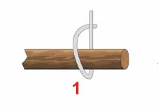
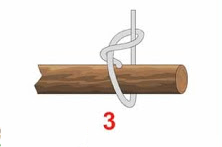
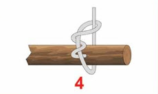
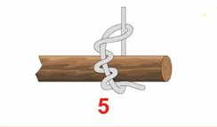

Simpul Tambat
Simpul tambat, dalam bahasa inggris dikenal sebagai timber hitch. Kegunaannya, selain untuk memulai ikatan silang juga untuk menautkan tali pada benda-benda lain, terutama benda-benda yang berukuran besar.
Cara membuat simpul tambat
1. Belitkan tali pada benda yang hendak di tali semisal batang kayu.

2. Putar (tautkan) ujung tali sehingga membentuk sosok (mata tali) pada badan tali.

3. Belitkan ujung tali melingkari badan tali yang nantinya bersentuhan dengan batang kayu.

4.Belitkan seperti langkah ke-3 hingga beberapa kali (banyaknya belitan disesuaikan dengan besar batang kayu)

5.Tarik badan tali dan dorong sosok (mata tali) hingga erat dengan batang kayu.

6. Selesai